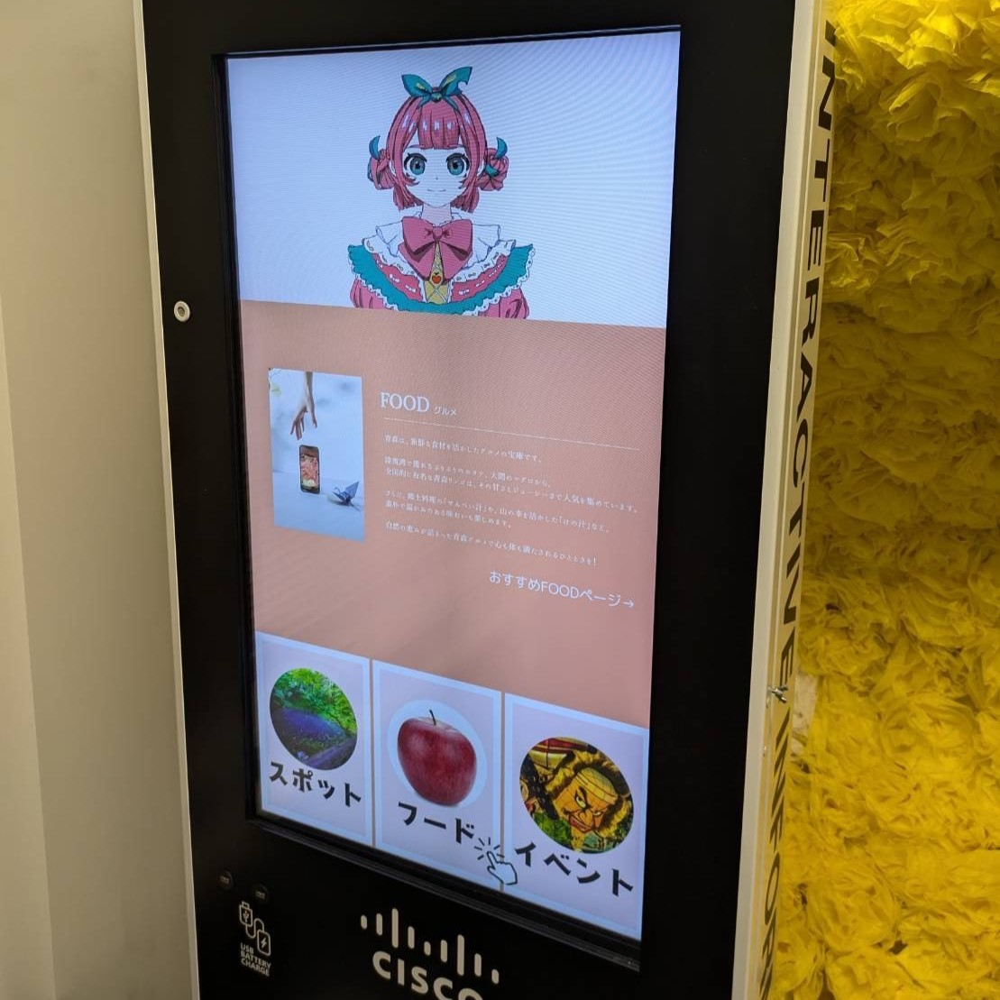
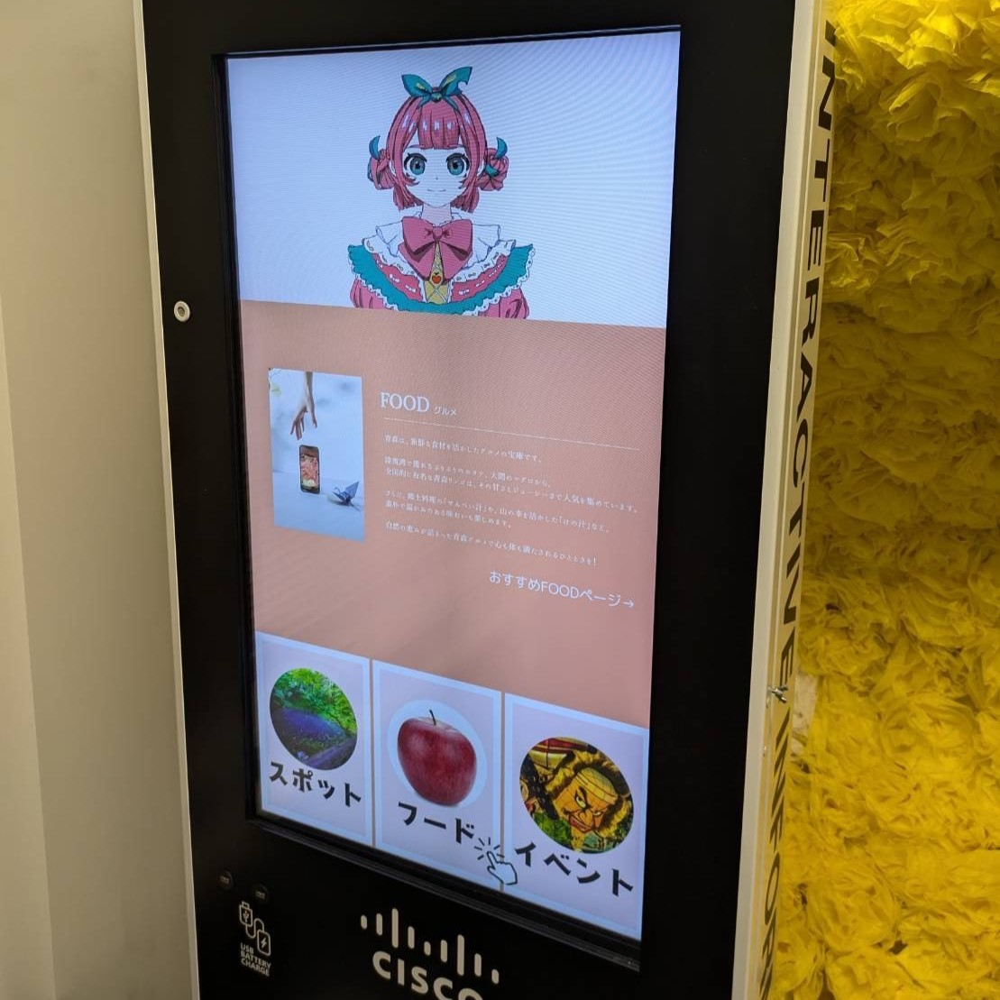

りんごのアイドル「しなのん」
この研究をきっかけに沖縄での企業様との共同研究を進める運びになりました。
URL
・ボタン認識
https://310lab.net/ringo/・音声認識
https://pi-kacyu.github.io/ringo-voice/
担当
コーディング
サイネージの目的
観光地を訪れてきた観光客に対して効果的な
ターゲット
観光地に訪れてきた観光客
デザインについて
「しなのん」は青森のアイドルを目指す女の子です。青森とりんごにとっても詳しいです。
コーディングについて
・音声認識
[名前] [種類] [おすすめ] [ねぶた] という言葉を話しかけると、その内容にあった動画が切り替わり映るようになっています。動画の処理がうまくいかないと切り替わったところで止まってしまうので少し改善が必要になっています。
・ボタン認識
[名前] [種類] [おすすめ] [おまけ] というボタンを押すとそれに合わせた内容の動画が切り替わり流れるプログラムになっています。音声認識のプログラムを改良して読み込みのラグを減らし、画面を触ってもらいやすくなるように作りました。